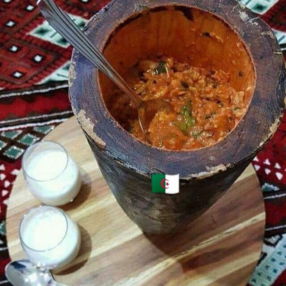

Algeria througth taste
Algerian culinary heritage embraces the deep-rooted traditions and cultural variety of the country. Couscous, Tajine, Chorba, Rechta, are some of the emblematic dishes of the country that you can’t resist. Subtly composed of a wide variety of striking flavours and scents, Algerian cuisine draws its originality from a combination between Berber, Arab-Andalusian culinary traditions.
Rechta
A dish made with fresh, handmade pasta, cut into thin strips. It is particularly symbolic of Algerian cuisine and is often consumed during Eid al-Fitr, but it is especially prepared during religious festivals.
ZFITI
A hot dish made with flatbread, green and/or red peppers, garlic, tomatoes, flavored with fresh coriander and olive oil or sheep's butter for the traditional version of BouSaada. The ingredients are crushed in a traditional wooden container called Mehraz.
You might also like